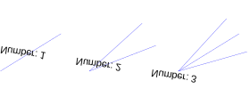

B 角の二等分線
ツールバー/アイコン:

 メニュー: D 描画 - L 線分 - B 角の二等分線
ショートカット: L, B
コマンド: linebisector | bisector | lb
メニュー: D 描画 - L 線分 - B 角の二等分線
ショートカット: L, B
コマンド: linebisector | bisector | lb
説明:
2つの直線間の角の二等分線を作成します。
手順:
- オプションツール・バーの中で、2つのラインの交点からスタートして、二等分線の長さを入力します。
第2のテキストボックスでは、作成したい角の二等分線の数を選んでください。
デフォルトは「1」です。しかし、さらに、ここに示されるような多数の二等分線を作成することができます:

- 角度を制限する最初のラインエンティティをクリックします。
- マウス・カーソルで、角の二等分線を作成したい第２のラインエンティティをクリックします。
それらが作成される前に、プレビューとして角の二等分線を表示します。